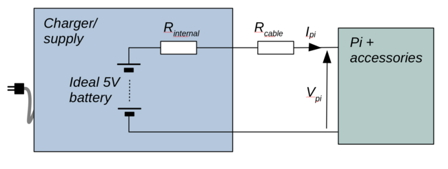

Why does my Raspberry Pi project keep displaying the 'lightning bolt' undervoltage indicator?

Constructors and experimenters often use a Raspberry Pi as the computational part of a more complex project -- Pi devices turn up in robots, media players, weather stations, cameras, and all sorts of other things. In many cases, the immediate choice for a power supply is a simple USB charger. Such power supplies, however, usually turn out to be wholly inadequate for anything except the Raspberry Pi on its own. If the power supply has to provide for any other equipment, you'll constantly see the 'lightning bolt' icon on the display -- if a display is part of the equipment. If there is no display, you may get no warning at all, just faulty operation.
This article explains why a simple USB charger can't maintain a proper supply voltage for a Raspberry Pi project, even if it nominally can supply the current required. I'll also explain a better way to power a Raspberry Pi project, which doesn't add a significant amount to the cost.
In this article, I'll assume that the reader has a basic knowledge of ohm's law, but is not necessarily an electronic engineer.
Why a USB charger can't maintain the correct voltage
For the purposes of analysis, we can represent the USB charger as an 'ideal' 5V battery, in series with a resistance, which I've labeled Rinternal. By 'ideal' I mean a battery that will deliver 5V, whatever its load. However much current is drawn, for however long, it will always deliver 5V.

No real battery, or any other kind of power supply, is 'ideal' in this respect -- the supply voltage always drops with an increasing current load. Always, no exceptions. We use the internal resistance as a model of that effect. Suppose, for the sake of discussion, that we take the internal resistance of the power supply to be 0.1 ohms. If the Pi and its accessories draw (say) 1 amp, then the voltage across the internal resistance will be 0.1V. That's 0.1V that cannot be supplied to the load -- it is, as we say, 'dropped'.
This simple model of an ideal batter and an internal resistance does not represent a modern switching-mode power supply perfectly -- but most supplies come pretty close. An internal resistance of 0.1 ohms is a pretty good estimate, but we can work it out more precisely if desired.
How could we do that? The easiest way is to connect a variable resistor as the load for the power supply (it needs to be a big, fat resistor, to dissipate all the heat that will be generated). We vary the resistance, and measure both the voltage and current. From the variation of the voltage with current, we can estimate the internal resistance. This is a routine operation when assessing the performance of batteries or power supplies. For now, let's stick with the 0.1 ohm figure for internal resistance -- it's probably not far off.
The internal resistance of the power supply is not the only resistance in the system -- the cables that connect the Pi project to the power supply will also have some resistance. So will any switches, connectors, or adapters in the supply lines. The cheap right-angle USB adapters available on online auction sites have appallingly high resistances, as do those cheap inline power switches that are made specifically for the Pi. Even without these items, we still have to reckon with a wiring resistance of about 0.05 ohms per meter of wire, and that's for a decent-quality USB power supply. That resistance is in both the positive and negative supply cables. So, in total, we should reckon on a total wiring resistance of 0.1 ohms per metre.
Taking these resistances together, we have 0.1 ohms for the internal resistance, plus 0.1 ohms per metre of length of the supply cable.
Let's suppose that the Pi and its attached accessories draw 1 amp from the supply (I have labeled the supply current Ipi in the diagram above). This means that the total voltage 'dropped' across the supply resistances is 0.1 volt for the internal resistance, plus another 0.1 volt per metre of supply cable. The remaining voltage -- the voltage that powers the Pi -- I have labeled Vpi. So at 1 amp, with a cable length of 1m, Vpi will be 5V - 0.1V - (1 * 0.1V) = 4.8V. With a current draw of 2A, the same calculations shows that Vpi is 4.6V. That's enough to trigger the undervoltage warning on some Pi models, and pretty close to the point at which the Pi won't work properly. And 2A is not an excessively high current load -- A Pi 4 will draw that much on its own, when it's working moderately hard.
What can be done?
In situations like this, it's tempting to think that you need a 'higher current' power supply. Maybe that's true -- but it's by no means certain. Frankly, there's little relationship between the rated current of the power supply, and its internal resistance -- not in the consumer USB power supply domain, anyway. Power supply manufacturers like to play the 'amps' game the same way that camera manufacturers want to play the 'megapixels' game. Your one-amp power supply might actually have a lower internal resistance than a twenty-amp power supply.
So, while you're likely to get an undervoltage situation quite easily if the power supply is grossly under-rated (it's a 0.5-amp supply, and you're drawing three amps), increasing the current rating of the supply won't necessarily make things better.
One thing that might help is to use better quality power cables, or just to shorten them. You certainly need to avoid putting things like switches and connectors in the power lines unless (a) you really need them and (b) you can source really good-quality items. The 0.05V dropped across a switch doesn't amount to much when there's volts to spare but, if the supply situation is already marginal, that could be too much.
Nevertheless, as I've explained, no improvement in the power supply connections will make any difference, if the problem is the voltage drop across the internal resistance of the power supply.
The solution
The solution I now adopt for all my Raspberry Pi (and similar) projects is simple: don't use a USB charger for the power supply. I use a 12V power supply, with a 12V-5V converter in the equipment. Such a converter only costs a few pounds.
Why does this work?
The power required by the Pi and its accessories will be the same, regardless of the supply voltage. Power is voltage x current. So, for a given power, we can reduce the current by increasing the voltage. We can't actually run the Pi on 12V -- it would break. That's what the converter is for. The current actually drawn by the Pi is not improved by the use of a 12V supply, but (a) the wiring between the 12V-5V converter and the Pi will only be a few centimetres long, so there will be no appreciable voltage drop and (b) these converters have a much lower internal resistance than USB chargers. That means (by definition) that their output voltage will stay more constant with increasing current draw.
Because the wiring between the main 12V power supply and the Pi project provides 12V rather than 5V, all other things being equal the current in that part of the cabling will be 5/12 what it would previously have been. So any current-related voltage drops will only be 5/12 as large.
I've quietly assumed that the 12V-5V converter is 100% efficient, which it won't be. But efficiencies of greater than 90% are commonplace, even in low-cost devices.
Most low-cost 12V-5V adapters are rated for a maximum current of 3 amps. It's possible to get units that will supply 10A or even more, but these tend to be speciality purchases.
The downside of using a 12V-5V converter is that the converter will generate some electrical interference that might be in the audio range. So the benefits need to be weighed carefully if you're building a media player. However, the converter probably does not generate any more interference than the Pi itself does.
Alternative solution
Another approach that I've found to work well with Raspberry Pis is to use a Pi-specific battery HAT. The HAT's wiring is as short as it can possibly be -- direct to the Pi's GPIO header. The battery HAT itself will be powered by a 12V or 9V mains adapter. Again, running the cabling at a higher voltage reduces the amount of current required to get a particular power, and thus reduces current-related voltage drops. Moreover, the battery provides a huge reservoir of current that the Pi can draw in transient conditions of high current -- when establishing a wifi connection, for example.
This is, of course, an ideal approach when you actually need the system to be battery-powered. But, even if you don't, it can still be effective. The disadvantage of using this design when you don't actually need battery back-up is that it's comparatively expensive.
Closing remarks
Seeing the 'lightning bolt' undervoltage indicator indicates a problem that may not be solved by using a USB charger with a higher current rating. It's true that using an underrated power supply will lead to undervoltage, but overrating the supply won't necessarily fix the problem.
The solution to this problem is usually not to get a 'high current' USB charger, but to find a way to supply the equipment at a higher voltage.